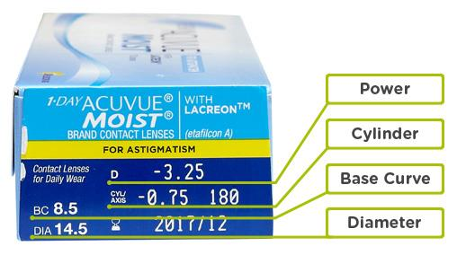

How do I read my prescription?
You can find your prescription on the piece of paper given to you by
your optician during a check-up, on the end/side of your contact
lens box or on the blister packs that contain your contact lenses.
A written prescription usually includes the following
specifications: base curve, diameter, power (or sphere), and then
additional figures for Cylinder and Axis if you have
astigmatism, and Addition and Dominant figures for
presbyopia
correction. The prescription for your left and right eye will be
listed separately as they may vary.
Example prescription:
|
|
Base Curve |
Diameter |
Power/Sphere |
Cylinder |
Axis |
Addition |
Dominant |
| Left |
8.4 |
14.0 |
-0.50 |
-1.25 |
10 |
>+1.0 |
N |
| Right |
8.4 |
14.0 |
-1.25 |
-1.25 |
10 |
+1.0 |
D |
Name & expiry date:Your prescription should also
contain the name of your contact lens brand (e.g. Acuvue Oasys) and
an expiry date, which is usually a year from the date of your
check-up.
Below is an example of the prescription listed on the side of the
box for 1-Day Acuvue Moist for Astigmatism.
Please be aware that a contact lens prescription is different from a
glasses prescription, so you cannot use one for the other.

What does each prescription figure mean?
Base Curve (BC)
: The base curve determines what type of fit is required for the
lens to meet the curve of your eye; this is usually written in
millimeters or sometimes with the words: flat, median or steep.
Diameter (DIA)
: The diameter of the contact lens is also written in millimeters
and determines the width that best fits your eye.
Power/Sphere (PWR/SPH)
: This figure shows whether you're long or short-sighted and how
much correction your eyes require. If you have long-sightedness
(hyperopia) your figure will begin with a + (plus sign) and if you have
short-sightedness (myopia), it will begin with a - (minus sign).
Prescription Figures for Astigmatism
The below figures are only displayed on contact lens prescriptions
where there is a need for astigmatism correction, and you require
toric lenses.
Cylinder (CYL): The cylinder will always be a minus
number that increases in measures of 0.25. Much like the
power/sphere figure that is shown on all standard prescriptions, the
cylinder for toric lenses denotes the extra visual requirements
needed for astigmatism and how severe the astigmatism is.
Axis (AX): Astigmatism is caused by the irregular
curvature of the eye; the axis is a figure which determines the
angle of the correction needed in order to see clearly. The Axis is
always a number between 0 and 180 degrees.
Prescription Figures for Presbyopia
The below figures are only displayed on contact lens prescriptions
where there is a need for presbyopia/multifocal correction.
Addition (ADD): If you suffer from presbyopia it
affects your near vision, the Addition figure determines what level
of correction you need to be able to see clearly at a close
distance. This is a number between 0.50 and 3.00, some contact lens
brands refer to this as a high, medium or low.
Dominant:
Multifocal
or bifocal contact lens wearers will see that the correction is
determined by a dominant and non- dominant eye. This is the dominant
figure, and is usually marked with a "D" and "N" to express which
eye is which.